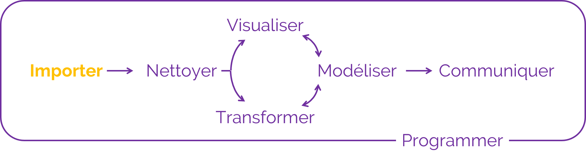

Introduction
Qu’est-ce que R ?
R est un langage de programmation et un logiciel utilisé pour réaliser des calculs statistiques et des graphiques.
R a été conçu en 1992 par Ross Ihaka et Robert Gentleman comme implémentation open source du langage de programmation S et publié en 1995.
Depuis, les utilisations de R se sont largement diversifiées :
analyses statistiques et workflows de data science
visualisations graphiques avancées
rapports automatisés
applications web
diaporamas, livres, et pages web
Pourquoi (pas) R ?
Avantages :
libre, open source, et plateforme indépendant
large variété d’extensions proposant des fonctionnalités supplémentaires
compatible avec d’autres langages de programmation
puissant pour l’analyse et la visualisation de données
très large communauté en ligne
souvent expérimenté comme étant simple à coder (pour un novice)
Pourquoi (pas) R ?
Inconvénients :
performance : évolutivité, mémoire et vitesse
courbe d’apprentissage importante
potentiels problèmes de sécurité (applications web)
souvent expérimenté comme étant étrange à coder (pour un expert)
R versus RStudio
Inspiré de Modern Drive
RStudio est un environnement de développement intégré (IDE) open source
IDE pour R le plus populaire depuis plusieurs années
de nombreuses fonctionnalités et extensions pour faciliter les workflows (suivi de version, sommaire, add-ins, …)
projets R et RMarkdown/Quarto
Mise en pratique : installer R et RStudio
Télécharger et installer R depuis
Télécharger et installer RStudio Desktop depuis


Console et script
La console vous permet de taper du code et de l’exécuter.
le code tapé dans la console sera perdu quand vous quitterez R …
… ce qui est problématique pour sauvegarder et partager votre code !
- Un script, à la manière d’un document texte, vous permet de sauvegarder votre code et de le partager.
Dans la console, le code est tapé à la suite de l’invite de commande
>.La console affiche la sortie (le résultat) du code à la ligne suivante (débute par
[1]).Le code exécuté à partir d’un script s’affiche dans la console.
Mise en pratique : console et script
Ouvrez R, tapez les commandes suivantes et appuyez sur
Entréepour les exécuter :"Ceci est du texte"2 + 2
Ouvrez RStudio
Ouvrez un script (
File > New File > RScript)Ajoutez les deux commandes ci-dessus et exécutez-les en plaçant le curseur à la fin de la première ligne et en cliquant sur
Run(ou en utilisant le raccourci clavierCtrl + Entrée)Sauvegardez le script (
Ctrl + S)
Les commentaires
Les commentaires servent à :
inactiver du code qu’on ne souhaite plus exécuter
ajouter des commentaires pour expliquer notre raisonnement
Dans R, les commentaires sont codés par un hash #.
Tout ce qui suit sur la même ligne ne sera pas traité comme du code.
Par convention, nous utilisons :
#pour commenter du code##pour ajouter des commentaires :
Les commentaires
Prenez dès maintenant l’habitude de commenter vos scripts.
Cela les rendra plus compréhensibles - pour vous et pour vos collègues !
Les commentaires peuvent vous servir à créer un en-tête (quoi ? qui ? quand ?)
Les commentaires servent également à structurer un script et à afficher une table des matières, en ajoutant quatre tirets - après un titre :

Mise en pratique : commenter un script
- Ouvrez un nouveau script et renseignez les informations essentielles (quoi ? qui ? quand ?)
- Ajoutez deux titres de sections
Mise en pratique : commenter un script
- Ouvrez un nouveau script et renseignez les informations essentielles (quoi ? qui ? quand ?)
- Ajouter deux titres de sections
Mise en pratique : paramètres de RStudio
Cliquez sur
Help > Cheatsheets > RStudio IDE Cheat Sheetet parcourez le document qui s’ouvre.Cliquez sur
View > Panes > Pane Layoutet arrangez les panneaux selon votre préférence.Cliquez sur
Tools > Global Optionset parcourez les différents éléments.


Organiser son travail
Les projets R
Les projets R (ou projets RStudio) vous fournissent un workflow robuste qui vous servira par la suite :
ils reposent sur l’idée que tous les fichiers associés à votre projet devraient être stockés dans le même dossier
aide à (re)trouver les fichiers
augmente la reproductibilité
facilite la collaboration
le répertoire de travail est défini dans le dossier où se trouve le fichier
.Rprojle répertoire de travail est clairement défini
indépendant des paramètres du système d’opération et de l’arborescence des dossiers (propre à chaque utilisateur)
limite les changements de répertoire lors de collaborations
Mise en pratique : créer un projet
Pour créer un projet R : File > New Project …
Mise en pratique : créer un projet

Arborescence
Une bonne organisation de vos fichiers avec une bonne structure de vos dossiers vous évitera de perdre du temps à chercher des fichiers.
La structure proposée ci-dessous est applicable à une bonne partie des projets :
üìÇDonn√©es brutes : donn√©es que vous r√©cup√©rez au d√©but du projet
üìÇDonn√©es modifi√©es : donn√©es g√©n√©r√©es en cours d‚Äôanalyse
üìÇScripts : code utilis√© pour l‚Äôanalyse, pour g√©n√©rer les figures, r√©diger des rapports
üìÇR√©sultats : tableaux ou fichiers de r√©sultats interm√©diaires / finaux
üìÇFigures : figures g√©n√©r√©es en cours d‚Äôanalyse et pour pr√©senter les r√©sultats
üìÇDocuments : rapports, pr√©sentations, articles, documentation
Mise en pratique : créer une arborescence
- Cliquez sur
New Folderpour ajouter des dossiers dans votre répertoire de travail

- Créez l’arborescence qui vous semble la mieux adaptée (pensez à utiliser des nombres quand vous nommez vos dossiers pour conserver l’ordre)
Mise en pratique : créer une arborescence
- Cliquez sur
New Folderpour ajouter des dossiers dans votre répertoire de travail
- Créez l’arborescence qui vous semble la mieux adaptée (pensez à utiliser des nombres quand vous nommez vos dossiers pour conserver l’ordre)

Valeurs
Valeurs
Tapez et exécutez les commandes suivantes :
1
"Ceci est du texte"
"2023-09-11 14:00:00"
x
"x"
pi
Valeurs
[1] 1[1] "Ceci est du texte"[1] "2023-09-11 14:00:00"Error in eval(expr, envir, enclos): objet 'x' introuvable[1] "x"[1] 3.141593üí°R est un langage orient√© objet : tous les √©lements que vous manipulez dans R (donn√©es, fonctions, ‚Ķ) sont stock√©s dans des objets.
Fonctions
Mise en pratique : opérations arithmétiques
Tapez et exécutez
2 + 3.Essayez d’autres opérateurs de calcul :
-,*,/, ou^.Calculez la racine carrée de 25 :
sqrt(x = 25).
❓Quelle est la différence entre les deux valeurs 5 obtenues ?
R est un calculateur !
Fonctions

Fonctions

Fonctions
R possède une large collection de fonctions intégrées qu’on utilise comme ceci :
Nous avons déjà vu certaines fonctions dans les exercices précédents :
+, -, *, ^, sqrt(), log() sont toutes des fonctions.
Fonctions
Fonctions infixes
Opérateur unaire (fonction à un seul argument)
Opérateur binaire (fonction à deux arguments)
Corps d’une fonction
function (x, base = exp(1)) .Primitive("log")function (x, ...)
UseMethod("mean")
<bytecode: 0x0000021e8292dc28>
<environment: namespace:base>[1] mean.Date* mean.default* mean.difftime* mean.POSIXct* mean.POSIXlt*
[6] mean.quosure*
see '?methods' for accessing help and source codefunction (e1, e2) .Primitive("+")function (file, header = TRUE, sep = ",", quote = "\"", dec = ".",
fill = TRUE, comment.char = "", ...)
read.table(file = file, header = header, sep = sep, quote = quote,
dec = dec, fill = fill, comment.char = comment.char, ...)
<bytecode: 0x0000021e857b46a8>
<environment: namespace:utils>Corps d’une fonction
function (file, header = FALSE, sep = "", quote = "\"'", dec = ".",
numerals = c("allow.loss", "warn.loss", "no.loss"), row.names,
col.names, as.is = !stringsAsFactors, tryLogical = TRUE,
na.strings = "NA", colClasses = NA, nrows = -1, skip = 0,
check.names = TRUE, fill = !blank.lines.skip, strip.white = FALSE,
blank.lines.skip = TRUE, comment.char = "#", allowEscapes = FALSE,
flush = FALSE, stringsAsFactors = FALSE, fileEncoding = "",
encoding = "unknown", text, skipNul = FALSE)
{
if (missing(file) && !missing(text)) {
file <- textConnection(text, encoding = "UTF-8")
encoding <- "UTF-8"
on.exit(close(file))
}
if (is.character(file)) {
file <- if (nzchar(fileEncoding))
file(file, "rt", encoding = fileEncoding)
else file(file, "rt")
on.exit(close(file))
}
if (!inherits(file, "connection"))
stop("'file' must be a character string or connection")
if (!isOpen(file, "rt")) {
open(file, "rt")
on.exit(close(file))
}
pbEncoding <- if (encoding %in% c("", "bytes", "UTF-8"))
encoding
else "bytes"
numerals <- match.arg(numerals)
if (skip > 0L)
readLines(file, skip)
nlines <- n0lines <- if (nrows < 0L)
5
else min(5L, (header + nrows))
lines <- .External(C_readtablehead, file, nlines, comment.char,
blank.lines.skip, quote, sep, skipNul)
if (encoding %in% c("UTF-8", "latin1"))
Encoding(lines) <- encoding
nlines <- length(lines)
if (!nlines) {
if (missing(col.names))
stop("no lines available in input")
rlabp <- FALSE
cols <- length(col.names)
}
else {
if (all(!nzchar(lines)))
stop("empty beginning of file")
if (nlines < n0lines && file == 0L) {
pushBack(c(lines, lines, ""), file, encoding = pbEncoding)
on.exit((clearPushBack(stdin())))
}
else pushBack(c(lines, lines), file, encoding = pbEncoding)
first <- scan(file, what = "", sep = sep, quote = quote,
nlines = 1, quiet = TRUE, skip = 0, strip.white = TRUE,
blank.lines.skip = blank.lines.skip, na.strings = character(0),
comment.char = comment.char, allowEscapes = allowEscapes,
encoding = encoding, skipNul = skipNul)
col1 <- if (missing(col.names))
length(first)
else length(col.names)
col <- numeric(nlines - 1L)
if (nlines > 1L)
for (i in seq_along(col)) col[i] <- length(scan(file,
what = "", sep = sep, quote = quote, nlines = 1,
quiet = TRUE, skip = 0, strip.white = strip.white,
blank.lines.skip = blank.lines.skip, comment.char = comment.char,
allowEscapes = allowEscapes, encoding = encoding,
skipNul = skipNul))
cols <- max(col1, col)
rlabp <- (cols - col1) == 1L
if (rlabp && missing(header))
header <- TRUE
if (!header)
rlabp <- FALSE
if (header) {
.External(C_readtablehead, file, 1L, comment.char,
blank.lines.skip, quote, sep, skipNul)
if (missing(col.names))
col.names <- first
else if (length(first) != length(col.names))
warning("header and 'col.names' are of different lengths")
}
else if (missing(col.names))
col.names <- paste0("V", 1L:cols)
if (length(col.names) + rlabp < cols)
stop("more columns than column names")
if (fill && length(col.names) > cols)
cols <- length(col.names)
if (!fill && cols > 0L && length(col.names) > cols)
stop("more column names than columns")
if (cols == 0L)
stop("first five rows are empty: giving up")
}
if (check.names)
col.names <- make.names(col.names, unique = TRUE)
if (rlabp)
col.names <- c("row.names", col.names)
nmColClasses <- names(colClasses)
if (is.null(nmColClasses)) {
if (length(colClasses) < cols)
colClasses <- rep_len(colClasses, cols)
}
else {
tmp <- rep_len(NA_character_, cols)
names(tmp) <- col.names
i <- match(nmColClasses, col.names, 0L)
if (any(i <= 0L))
warning("not all columns named in 'colClasses' exist")
tmp[i[i > 0L]] <- colClasses[i > 0L]
colClasses <- tmp
}
what <- rep.int(list(""), cols)
names(what) <- col.names
colClasses[colClasses %in% c("real", "double")] <- "numeric"
known <- colClasses %in% c("logical", "integer", "numeric",
"complex", "character", "raw")
what[known] <- lapply(colClasses[known], do.call, list(0))
what[colClasses %in% "NULL"] <- list(NULL)
keep <- !sapply(what, is.null)
data <- scan(file = file, what = what, sep = sep, quote = quote,
dec = dec, nmax = nrows, skip = 0, na.strings = na.strings,
quiet = TRUE, fill = fill, strip.white = strip.white,
blank.lines.skip = blank.lines.skip, multi.line = FALSE,
comment.char = comment.char, allowEscapes = allowEscapes,
flush = flush, encoding = encoding, skipNul = skipNul)
nlines <- length(data[[which.max(keep)]])
if (cols != length(data)) {
warning("cols = ", cols, " != length(data) = ", length(data),
domain = NA)
cols <- length(data)
}
if (is.logical(as.is)) {
as.is <- rep_len(as.is, cols)
}
else if (is.numeric(as.is)) {
if (any(as.is < 1 | as.is > cols))
stop("invalid numeric 'as.is' expression")
i <- rep.int(FALSE, cols)
i[as.is] <- TRUE
as.is <- i
}
else if (is.character(as.is)) {
i <- match(as.is, col.names, 0L)
if (any(i <= 0L))
warning("not all columns named in 'as.is' exist")
i <- i[i > 0L]
as.is <- rep.int(FALSE, cols)
as.is[i] <- TRUE
}
else if (length(as.is) != cols)
stop(gettextf("'as.is' has the wrong length %d != cols = %d",
length(as.is), cols), domain = NA)
do <- keep & !known
if (rlabp)
do[1L] <- FALSE
for (i in (1L:cols)[do]) {
data[[i]] <- if (is.na(colClasses[i]))
type.convert(data[[i]], as.is = as.is[i], dec = dec,
numerals = numerals, na.strings = character(0L),
tryLogical = tryLogical)
else if (colClasses[i] == "factor")
as.factor(data[[i]])
else if (colClasses[i] == "Date")
as.Date(data[[i]])
else if (colClasses[i] == "POSIXct")
as.POSIXct(data[[i]])
else methods::as(data[[i]], colClasses[i])
}
compactRN <- TRUE
if (missing(row.names)) {
if (rlabp) {
row.names <- data[[1L]]
data <- data[-1L]
keep <- keep[-1L]
compactRN <- FALSE
}
else row.names <- .set_row_names(as.integer(nlines))
}
else if (is.null(row.names)) {
row.names <- .set_row_names(as.integer(nlines))
}
else if (is.character(row.names)) {
compactRN <- FALSE
if (length(row.names) == 1L) {
rowvar <- (1L:cols)[match(col.names, row.names, 0L) ==
1L]
row.names <- data[[rowvar]]
data <- data[-rowvar]
keep <- keep[-rowvar]
}
}
else if (is.numeric(row.names) && length(row.names) == 1L) {
compactRN <- FALSE
rlabp <- row.names
row.names <- data[[rlabp]]
data <- data[-rlabp]
keep <- keep[-rlabp]
}
else stop("invalid 'row.names' specification")
data <- data[keep]
if (is.object(row.names) || !(is.integer(row.names)))
row.names <- as.character(row.names)
if (!compactRN) {
if (length(row.names) != nlines)
stop("invalid 'row.names' length")
if (anyDuplicated(row.names))
stop("duplicate 'row.names' are not allowed")
if (anyNA(row.names))
stop("missing values in 'row.names' are not allowed")
}
class(data) <- "data.frame"
attr(data, "row.names") <- row.names
data
}
<bytecode: 0x0000021e81ae63c8>
<environment: namespace:utils>Arguments d’une fonction
Apprendre à utiliser une fonction
Description
log computes logarithms, by default natural logarithms, log10 computes common (i.e., base 10) logarithms, and log2 computes binary (i.e., base 2) logarithms. The general form log(x, base) computes logarithms with base base.
Apprendre à utiliser une fonction
Usage
Apprendre à utiliser une fonction
Arguments
x a numeric or complex vector.
base a positive or complex number: the base with respect to which logarithms are computed. Defaults to e = exp(1).
Assignation implicite
[1] 2[1] 2[1] 0.5[1] 2[1] 2[1] 2Assignation implicite : attention !
Assignation explicite :
## l'exemple utilise des vecteurs (séquences de nombres entourées par `c()`)
quantile(x = c(5, 1, 3), probs = c(0.25, 0.5, 0.75))25% 50% 75%
2 3 4 Assignation implicite par position :
Des erreurs dans les positions peuvent poser problème :
Mise en pratique : arguments d’une fonction
Parmi les lignes de code suivantes, laquelle (ou lesquelles) retourneront une erreur ? Pourquoi ?
log(x = 1)
log(x = "1")
log(x)
log(value = 1)
log(`1`)
log(1)
Mise en pratique : arguments d’une fonction
[1] 0Error in log(x = "1"): argument non numérique pour une fonction mathématiqueError in eval(expr, envir, enclos): objet 'x' introuvableError in eval(expr, envir, enclos): l'argument "x" est manquant, avec aucune valeur par défautError in eval(expr, envir, enclos): objet '1' introuvable[1] 0Assignation et objets
Mise en pratique : assignation et objets
Tapez et exécutez
x <- 1puisx.Exécutez
x + 2.Exécutez
x <- 5puis à nouveaux + 2.
❓Pourquoi la console n’affiche-t-elle rien après l’exécution de x <- 1 ?
❓Quel rôle joue le symbole “flèche” <- ?
❓Quelle est la valeur de x après éxécution des trois lignes de code ?
❓Que se passe-t-il si vous exécutez y <- x ? Et y <- x <- 2 ?
❓Exécutez y <- 2 <- x. Que se passe-t-il ?
❓Pouvez-vous assigner une valeur et afficher le contenu de l’objet simultanément ?
Assignation et objets

Assignation et objets
Assignation et objets
L’environnement
Par défaut, les objets assignés existent dans l’environnenemt global appelé R_GlobalEnv.
L’aperçu de tout ce que vous avec défini se trouve dans le panneau d’environnement.

L’environnement
Pour supprimer un objet de l’environnement, utilisez la fonction rm().
Pour supprimer plusieurs objets à la fois, cliquez sur l’icône “balai” :
en affichage liste, tous les objets de l’environnement seront supprimés
en affichage grille, cochez les objets à supprimer avant de cliquer sur l’icône
Assigner et afficher des objets
Syntaxe des noms d’objets
De bons noms d’objets :
doivent être descriptifs (pas trop compliqués mais précis)
doivent commencer par une lettre
- ✅
val1, ❌1val,.val1
- ✅
peuvent contenir d’autres symboles comme des nombres, des points ou des tirets
_mais pas des tirets-- ✅
val_1,val.1❌val-1
- ✅
doivent suivre une convention cohérente et ne pas mélanger différents styles
- ❌
val1,val_2etval.3
- ❌
ne doivent pas utiliser des noms réservés qui ont une fonction dans R
- ❌
if,in,function,TRUE,FALSE,NA,NaN
- ❌
Dans R, les noms sont sensibles à la casse : myvalues, myValues et MyValues sont des objets différents !

Illustration de Allison Horst
Syntaxe des noms d’objets
Tout est question de lisibilité - choisissez la syntaxe qui vous facilite la vie (et pensez aux personnes qui liront votre code !)
Syntaxe des noms d’objets
Noms potentiels d’objets :
myvalue1myValue1MyValue1my_value_1my.value.1… et toutes les combinaisons de minuscules, majuscules et symboles vues précédemment
Utilisez le style que vous préférez, mais soyez cohérents !
Syntaxe d’assignation
[1] "Jo"[1] "Clermont-Ferrand"[1] "France"L’utilisation du = est controversée car source de confusion, mais beaucoup plus répandue dans d’autres langages de programmation.
Utiliser des objets dans des fonctions
one <- 1
log(one)
Utiliser des objets dans des fonctions
Types de données
Il existe plusieurs types de données basiques dans R : character, double, integer, complex, et logical.
[1] "character"[1] "double"[1] "integer"[1] "complex"[1] "logical"Chacun de ces types de données possède ses propres caractéristiques et utilisations.
Types de données et classes atomiques
[1] "double"[1] "numeric"[1] "integer"[1] "integer"[1] "complex"[1] "complex"Même si “integer” et “complex” sont des classes spécifiques dans R, elles sont considérées comme des sous-types du type de données plus général “numeric”.
Coercition en d’autres types de données
Les fonctions as.*() vous permettent de changer le type de données d’une valeur :
Dates et horodatages
Objets “Date”
Objets “Datetime”
Dates et horodatages
Valeurs manquantes
“Not available”
NA est une valeur spéciale utilisée pour représenter une donnée manquante on indéfinie.
“Not a number”
La valeur NaN est une autre valeur spéciale utilisée pour représenter des valeurs indéfinies dans des opérations mathématiques :
… comme le résultat de la division de 0 par 0 :
Valeurs inconnues
Comme elles sont inconnues, les valeurs spéciales NA et NaN ne sont égales à aucune autre valeur, y compris elles-mêmes :
Vous ne pouvez assigner aucune valeur aux valeurs spéciales NA et NaN :
Vecteurs
Mise en pratique : calculer des moyennes
- Calculez la moyenne de ces trois valeurs numériques : 140, 97, et 222

Vecteurs

Mise en pratique : calculer des moyennes
- Calculez la moyenne de ces trois valeurs numériques : 140, 97, et 222
Mise en pratique : calculer des moyennes
- Calculez la moyenne de ces trois valeurs numériques : 140, 97, et 222
Mais … Comment suis-je sensé savoir ?
Usage
Examples
Vecteurs
Comme c’est le cas pour les valeurs, les vecteurs peuvent être de différents types :
Vecteurs nommés
vert violet jaune
"#28A87D" "#9C55E3" "#EFAC00" Vous pouvez également créer un vecteur non nommé et ajouter les noms à l’aide de names(x) :
couleurs <- c("#28A87D", "#9C55E3", "#EFAC00")
names(couleurs) <- c("vert", "violet", "jaune")
couleurs vert violet jaune
"#28A87D" "#9C55E3" "#EFAC00" Pour supprimer les noms, utilisez unname() :
Accéder aux éléments de vecteurs
Accéder aux éléments de vecteurs nommés
vert violet jaune
"#28A87D" "#9C55E3" "#EFAC00" vert jaune
"#28A87D" "#EFAC00" Les vecteurs nommés peuvent également être explorés par noms d’éléments :
NA et NaN dans des vecteurs
Quand il est utilisé dans un vecteur, le type de NA est déterminé par les types de données des autres valeurs - pas besoin de spécifier par exemple NA_character_ :
NA et NaN dans des vecteurs
Comme ils sont inconnus, toute opération mathématique retournera NA ou NaN :
Pour ignorer les valeurs inconnues, vous pouvez définir l’argument na.rm comme TRUE :
Extension et combinaison de vecteurs
vert violet jaune
"#28A87D" "#9C55E3" "#EFAC00" "#000000" "#ffffff" vert violet jaune noir blanc
"#28A87D" "#9C55E3" "#EFAC00" "#000000" "#ffffff" [[1]]
[1] 1
[[2]]
[1] 2
[[3]]
[1] 3
[[4]]
[1] 4
[[5]]
[1] 5
[[6]]
function (x, ...)
UseMethod("mean")
<bytecode: 0x0000021e8292dc28>
<environment: namespace:base>Notez que dans le dernier exemple toutes les valeurs prennent le même type de données (les vecteurs atomiques ne contiennent qu’un seul type de données)
Coercition
Les vecteurs atomiques ne contiennent qu’un seul type de données et toutes les valeurs sont implicitement contraintes à prendre le même type de données :
Coercition
La règle de coercition est la suivante :
logical ➙ integer ➙ double ➙ complex ➙ character
Coercition explicite
Il est possible de contraindre explicitement les valeurs d’un vecteur atomique à un type de données spécifique :
Coercition explicite
Il est possible de contraindre explicitement les valeurs d’un vecteur atomique à un type de données spécifique :
Notez que tous les nombres à l’exception de 0 deviennent TRUE :
… et toutes les chaînes de caractères à l’exception de "TRUE", "FALSE", "T" et "F" deviennent NA :
Coercition explicite
Il est possible de contraindre explicitement les valeurs d’un vecteur atomique à un type de données spécifique :
Mise en pratique : coercition de vecteurs
Sans exécuter le code, essayez de prévoir le résultat des lignes suivantes :
a <- c(1.7, "1.7")etas.numeric(a)b <- c(TRUE, 2022, 1.375)etas.logical(as.complex(b))c <- c(TRUE, "t", "TRUE", "T")etas.logical(c)as.integer(c(45L, 0.237, 4.9))
- Que retourne le code as.factor(c(“rouge”, “bleu”)) ?
Mise en pratique : coercition de vecteurs
Mise en pratique : coercition de vecteurs
Facteurs
Facteurs
Les facteurs représentent des données catégorielles dans un ordre spécifique :
[1] "bien" "neutre" "mauvais"[1] bien neutre mauvais
Levels: bien mauvais neutre[1] bien neutre mauvais
Levels: bien mauvais neutre[1] bien neutre mauvais
Levels: bien neutre mauvais[1] bien neutre mauvais
Levels: mauvais neutre bienFacteurs
… même si la variable est encodée par des nombres :
Niveaux et étiquettes de facteurs
levels() retourne les niveaux uniques dans l’ordre spécifié :
Vous pouvez aussi préciser des étiquettes qui écrasent les valeurs d’origine :
Coercition de facteurs
Pour transformer un facteur en nombres, utilisez as.numeric() :
Notez que ceci retourne les éléments du facteur comme nombres selon les positions des niveaux !
Pour transformer à nouveau en chaînes de caractères, utilisez as.character() :
Coercition de facteurs : attention !
Retourne des nombres selon les niveaux :
Retourne des nombres selon les éléments :
Packages
Qu’est-ce qu’un package ?
Un package est une collection de fonctions, données, et autres objets qui sont conçus pour effectuer des taches spécifiques ou résoudre certains problèmes.
Ces packages sont créés et maintenus par la communauté R, et sont souvent partagés sur le Comprehensive R Archive Network (CRAN) ou d’autres dépôts comme BioConductor.
Installer des packages supplémentaires
Pour utiliser les fonctionnalités d’un package spécifique, vous pouvez installer le package sur votre ordinateur :
Utiliser des packages : charger les librairies
Pour utiliser les fonctionnalités d’un package installé, vous devez charger le package :
Utiliser des packages : charger les librairies
Pour utiliser les fonctionnalités d’un package installé, vous devez charger le package :
# A tibble: 344 × 8
species island bill_length_mm bill_depth_mm flipper_length_mm body_mass_g
<fct> <fct> <dbl> <dbl> <int> <int>
1 Adelie Torgersen 39.1 18.7 181 3750
2 Adelie Torgersen 39.5 17.4 186 3800
3 Adelie Torgersen 40.3 18 195 3250
4 Adelie Torgersen NA NA NA NA
5 Adelie Torgersen 36.7 19.3 193 3450
6 Adelie Torgersen 39.3 20.6 190 3650
7 Adelie Torgersen 38.9 17.8 181 3625
8 Adelie Torgersen 39.2 19.6 195 4675
9 Adelie Torgersen 34.1 18.1 193 3475
10 Adelie Torgersen 42 20.2 190 4250
# ℹ 334 more rows
# ℹ 2 more variables: sex <fct>, year <int>Utiliser des packages : conflits
Notez que dans certains cas, plusieurs packages peuvent contenir des fonctions (ou des jeux de données) portant le même nom.
Si vous chargez deux fonctions portant le même nom, la fonction du package chargé en dernier sera utilisée !
Utiliser des packages : Namespace
Utiliser des packages : Namespace
Pour éviter les conflits, il est possible de faire référence explicitement à des fonctions spécifiques à l’aide de namspaces :
[1] "Cafe" "Latte machiatto" "Expresso" Les namespaces sont utiles dans les situations suivantes :
résoudre les conflits dans les noms de fonctions
utiliser des fonctions sans charger toutes les fonctionnalités d’un package
être explicite pour les fonctions non basiques
Données tabulaires
Data Frames
Vous pouvez stocker plusieurs vecteurs, avec différents types de données, comme données tabulaires dans des data frames :
ids names
1 1 Joe
2 2 Jack
3 3 William
4 4 Averell
5 5 RantanplanVous pouvez expliciter les noms des colonnes :
Accéder aux éléments d’un Data Frame
Lignes :
Colonnes :
Accéder aux éléments d’un Data Frame
Cellules :
Accéder aux éléments d’un Data Frame
Les Data Frames supportent la correspondance partielle :
personnage n’est pas une colonne de df_noms mais ressemble à personnages :
Le Data Frame moderne : le Tibble
Les Tibbles sont une refonte moderne du data.frame, conservant ce que le temps a montré être efficace, et supprimant ce qui ne l’était pas.
Le nom vient de la manière dont on créait ces objets à l’origine : tbl_df() , plus simple à prononcer “tibble diff” ou “tibble d.f.”.
# A tibble: 5 × 2
id personnages
<int> <chr>
1 1 Joe
2 2 Jack
3 3 William
4 4 Averell
5 5 Rantanplan Comme les fonctions utilisées précédemment, tibble() est une fonction. Alors que mean() et + sont des fonctions de base, tibble() appartient à un package ajouté qui s’appelle également {tibble}.
Data Frame vs Tibble
Les Tibbles sont une refonte moderne du data.frame, conservant ce que le temps a montré être efficace, et supprimant ce qui ne l’était pas.
Les principales différences dans l’utilisation d’un data frame vs un tibble :
les tibbles possèdent une méthode d’affichage affinée
seules les 10 premières lignes sont affichées, et toutes les colonnes qui rentrent sur l’écran
en plus de son nom, le type de chaque colonne est affiché
le type de données et les dimensions sont également affichées
Data Frame vs Tibble
Les Tibbles possèdent une méthode d’affichage affinée :
id value
1 1 589.879102
2 2 673.256334
3 3 186.322446
4 4 764.392494
5 5 562.238597
6 6 749.908679
7 7 212.571729
8 8 583.367838
9 9 349.572483
10 0 405.703953
11 1 523.128822
12 2 34.183236
13 3 37.187187
14 4 763.332463
15 5 465.221167
16 6 239.378552
17 7 915.221160
18 8 931.762081
19 9 130.540473
20 0 607.259864
21 1 568.037656
22 2 101.735745
23 3 610.314056
24 4 212.548013
25 5 895.669870
26 6 298.653610
27 7 53.153443
28 8 79.817507
29 9 49.247717
30 0 959.742290
31 1 457.910229
32 2 861.945272
33 3 807.290590
34 4 578.680619
35 5 685.533664
36 6 968.067776
37 7 72.143937
38 8 887.212202
39 9 972.683757
40 0 941.196053
41 1 957.068474
42 2 305.970247
43 3 522.326194
44 4 552.309238
45 5 359.195628
46 6 809.423879
47 7 794.045299
48 8 601.074374
49 9 289.823369
50 0 816.637862
51 1 29.210592
52 2 770.434669
53 3 687.345072
54 4 24.387954
55 5 77.140340
56 6 924.264140
57 7 732.963034
58 8 283.065105
59 9 974.199085
60 0 824.710682
61 1 39.522620
62 2 420.463721
63 3 485.596868
64 4 171.302404
65 5 115.644028
66 6 933.429406
67 7 705.962933
68 8 45.687253
69 9 594.654120
70 0 91.461090
71 1 675.987748
72 2 851.296401
73 3 577.707925
74 4 186.287796
75 5 232.014593
76 6 679.588237
77 7 689.146260
78 8 332.841809
79 9 212.087142
80 0 807.814103
81 1 262.652845
82 2 498.954648
83 3 595.770242
84 4 276.917952
85 5 105.670761
86 6 235.141619
87 7 984.860183
88 8 999.287476
89 9 735.012034
90 0 222.109920
91 1 238.170522
92 2 598.002434
93 3 718.995198
94 4 722.488913
95 5 986.642692
96 6 155.678375
97 7 137.988612
98 8 398.662694
99 9 536.184911
100 0 890.695837
101 1 894.359668
102 2 343.473572
103 3 667.236764
104 4 700.133797
105 5 280.986801
106 6 124.793888
107 7 32.782999
108 8 606.136977
109 9 850.579767
110 0 766.120686
111 1 337.517158
112 2 922.973228
113 3 759.093345
114 4 794.251632
115 5 652.111666
116 6 889.408937
117 7 639.664849
118 8 818.121250
119 9 669.286424
120 0 610.247859
121 1 464.688398
122 2 633.040675
123 3 647.114915
124 4 574.367099
125 5 38.537775
126 6 278.084729
127 7 942.827440
128 8 848.812160
129 9 754.769005
130 0 879.630094
131 1 824.194616
132 2 709.478814
133 3 829.654203
134 4 89.582570
135 5 807.655251
136 6 593.018494
137 7 283.656890
138 8 310.224409
139 9 167.217719
140 0 735.238026
141 1 480.799430
142 2 53.313221
143 3 478.382022
144 4 888.789979
145 5 145.364521
146 6 580.617530
147 7 834.898765
148 8 828.718825
149 9 459.149739
150 0 276.548789
151 1 129.193253
152 2 489.218001
153 3 814.223784
154 4 378.577200
155 5 491.104519
156 6 935.699651
157 7 356.625777
158 8 473.685811
159 9 635.269840
160 0 495.019859
161 1 362.565075
162 2 637.548338
163 3 217.660356
164 4 687.287866
165 5 292.238068
166 6 218.176174
167 7 623.928849
168 8 989.454460
169 9 204.549141
170 0 943.199859
171 1 403.910248
172 2 193.306697
173 3 376.612131
174 4 371.853207
175 5 876.012175
176 6 16.233345
177 7 880.885660
178 8 83.527638
179 9 171.464082
180 0 176.577315
181 1 65.222012
182 2 921.649189
183 3 246.094600
184 4 268.157528
185 5 701.144559
186 6 628.655588
187 7 649.872765
188 8 742.284333
189 9 76.006731
190 0 701.325576
191 1 831.269602
192 2 549.152670
193 3 416.937710
194 4 679.268034
195 5 76.180409
196 6 46.118807
197 7 881.268753
198 8 124.675024
199 9 298.250472
200 0 542.690446
201 1 623.815080
202 2 407.541095
203 3 959.839255
204 4 485.676849
205 5 763.051481
206 6 887.394507
207 7 208.827760
208 8 921.897977
209 9 811.105029
210 0 963.986704
211 1 166.365363
212 2 854.702982
213 3 205.719806
214 4 601.343030
215 5 411.666824
216 6 611.577492
217 7 570.526424
218 8 808.182951
219 9 901.763156
220 0 396.103065
221 1 223.266242
222 2 938.904272
223 3 844.806749
224 4 127.775810
225 5 139.043425
226 6 391.115017
227 7 75.972918
228 8 616.246916
229 9 297.485172
230 0 361.211459
231 1 669.180047
232 2 793.614795
233 3 391.180263
234 4 472.570209
235 5 552.503043
236 6 86.435642
237 7 336.335673
238 8 829.530971
239 9 758.153538
240 0 13.693048
241 1 450.541702
242 2 177.778170
243 3 489.787145
244 4 353.479789
245 5 439.576047
246 6 529.872398
247 7 376.029530
248 8 33.123169
249 9 165.441340
250 0 963.081124
251 1 813.362991
252 2 605.143197
253 3 629.599644
254 4 208.442865
255 5 675.688191
256 6 268.109090
257 7 565.953035
258 8 69.575433
259 9 73.960243
260 0 627.328440
261 1 423.909023
262 2 639.611585
263 3 440.033579
264 4 732.836842
265 5 250.428289
266 6 464.857594
267 7 329.028168
268 8 909.050496
269 9 713.440284
270 0 592.063372
271 1 176.581744
272 2 288.111928
273 3 210.109482
274 4 272.196285
275 5 184.537018
276 6 586.170583
277 7 259.349946
278 8 378.422753
279 9 5.428285
280 0 502.870764
281 1 45.693524
282 2 611.070750
283 3 394.400934
284 4 286.289101
285 5 34.950448
286 6 465.928331
287 7 92.261313
288 8 782.080063
289 9 507.200561
290 0 315.182102
291 1 504.909262
292 2 932.613465
293 3 80.665315
294 4 848.571902
295 5 149.566352
296 6 289.357863
297 7 981.405300
298 8 354.687341
299 9 392.259115
300 0 254.861346
301 1 883.498824
302 2 102.831993
303 3 351.588298
304 4 511.345575
305 5 769.889405
306 6 102.742363
307 7 928.422934
308 8 698.642054
309 9 686.658156
310 0 257.239325
311 1 890.600525
312 2 502.087675
313 3 445.930573
314 4 555.181130
315 5 533.255408
316 6 881.897832
317 7 120.674698
318 8 714.202916
319 9 893.336100
320 0 845.932767
321 1 570.426670
322 2 688.885484
323 3 630.383296
324 4 998.998368
325 5 322.542346
326 6 391.338137
327 7 188.744641
328 8 903.778424
329 9 317.013047
330 0 574.126541
331 1 969.461089
332 2 140.688538
333 3 761.120138
334 4 105.737049
335 5 789.398135
336 6 858.816128
337 7 608.885265
338 8 36.573221
339 9 381.178970
340 0 968.835326
341 1 716.498688
342 2 915.540855
343 3 282.649033
344 4 946.633971
345 5 140.953068
346 6 130.591117
347 7 331.274559
348 8 655.246822
349 9 125.566409
350 0 320.564575
351 1 714.818257
352 2 291.572071
353 3 657.387707
354 4 966.962515
355 5 116.693552
356 6 954.763918
357 7 244.172551
358 8 472.478891
359 9 464.793903
360 0 708.251160
361 1 648.049572
362 2 103.840506
363 3 755.374330
364 4 344.834316
365 5 836.412532
366 6 742.760450
367 7 544.225878
368 8 295.482231
369 9 574.767622
370 0 501.953975
371 1 991.210436
372 2 367.638628
373 3 423.810469
374 4 348.740574
375 5 650.735408
376 6 849.760434
377 7 945.017524
378 8 83.707315
379 9 710.180609
380 0 235.835667
381 1 650.016938
382 2 521.023136
383 3 543.042094
384 4 797.570412
385 5 346.189874
386 6 692.506978
387 7 169.250034
388 8 168.856344
389 9 553.993394
390 0 261.322897
391 1 585.107950
392 2 472.980302
393 3 776.513297
394 4 531.153609
395 5 990.136537
396 6 167.926510
397 7 617.539028
398 8 692.825051
399 9 520.438763
400 0 873.985285
401 1 688.945250
402 2 452.999857
403 3 834.214652
404 4 928.803582
405 5 273.993549
406 6 526.632622
407 7 300.390450
408 8 105.100285
409 9 317.728227
410 0 627.855422
411 1 931.163680
412 2 924.107398
413 3 838.508555
414 4 138.017913
415 5 645.279714
416 6 750.412891
417 7 350.230163
418 8 632.733806
419 9 691.810471
420 0 919.235627
421 1 928.936653
422 2 161.745701
423 3 116.263894
424 4 697.104387
425 5 831.529456
426 6 151.189158
427 7 890.410568
428 8 118.697474
429 9 195.774674
430 0 831.259577
431 1 497.284639
432 2 685.953712
433 3 243.296497
434 4 714.842263
435 5 373.496223
436 6 167.755271
437 7 534.149035
438 8 705.782393
439 9 516.122728
440 0 614.437510
441 1 808.483434
442 2 822.465308
443 3 669.459184
444 4 512.519191
445 5 665.468731
446 6 877.524222
447 7 218.354818
448 8 78.805648
449 9 134.325990
450 0 523.088218
451 1 824.457732
452 2 929.487557
453 3 893.668046
454 4 642.235930
455 5 452.328368
456 6 840.625022
457 7 6.922428
458 8 240.380686
459 9 824.659706
460 0 268.226736
461 1 303.270338
462 2 862.892198
463 3 362.377013
464 4 891.951265
465 5 417.758679
466 6 711.581846
467 7 107.853880
468 8 787.519640
469 9 212.496982
470 0 635.877657
471 1 115.628875
472 2 870.403576
473 3 582.021622
474 4 497.429665
475 5 76.177632
476 6 316.891834
477 7 353.360570
478 8 349.124708
479 9 29.639921
480 0 757.637320
481 1 662.390926
482 2 4.807015
483 3 259.437287
484 4 44.003847
485 5 77.591053
486 6 97.588375
487 7 245.722604
488 8 28.443642
489 9 995.419805
490 0 876.106353
491 1 752.444545
492 2 407.547341
493 3 706.734799
494 4 958.412525
495 5 348.492036
496 6 214.748496
497 7 461.708295
498 8 392.649615
499 9 48.261622
500 0 618.362482
501 1 344.767577
502 2 401.690899
503 3 693.255512
504 4 421.689141
505 5 361.938066
506 6 763.946336
507 7 681.053720
508 8 537.328686
509 9 502.373219
510 0 108.504684
511 1 379.819219
512 2 418.223524
513 3 722.494995
514 4 255.263170
515 5 512.931565
516 6 124.480953
517 7 151.167384
518 8 885.003651
519 9 641.278642
520 0 227.868184
521 1 272.458530
522 2 685.467867
523 3 528.442885
524 4 446.566966
525 5 125.240161
526 6 862.803275
527 7 694.560081
528 8 306.915819
529 9 11.782201
530 0 57.560335
531 1 49.069341
532 2 76.357383
533 3 117.614587
534 4 342.242727
535 5 829.292549
536 6 682.687507
537 7 658.555788
538 8 858.998728
539 9 445.815985
540 0 833.543319
541 1 321.870795
542 2 617.696494
543 3 941.605846
544 4 556.377246
545 5 372.520384
546 6 298.703196
547 7 114.648507
548 8 924.720300
549 9 116.417792
550 0 646.470469
551 1 395.809861
552 2 341.126937
553 3 86.357410
554 4 341.807353
555 5 170.480043
556 6 975.905560
557 7 260.578203
558 8 823.092511
559 9 905.529845
560 0 861.890167
561 1 329.350713
562 2 255.726904
563 3 387.323954
564 4 101.571487
565 5 301.488471
566 6 67.397923
567 7 625.521463
568 8 444.006277
569 9 774.476309
570 0 452.551385
571 1 663.882334
572 2 969.201086
573 3 543.152238
574 4 906.003717
575 5 23.925790
576 6 141.315534
577 7 476.131277
578 8 48.504928
579 9 123.157148
580 0 804.002142
581 1 728.014427
582 2 484.133412
583 3 640.756481
584 4 283.590503
585 5 960.023291
586 6 682.454078
587 7 938.720449
588 8 269.579007
589 9 117.698282
590 0 830.912933
591 1 145.587512
592 2 927.154817
593 3 486.729957
594 4 491.746146
595 5 999.406382
596 6 15.448597
597 7 825.198679
598 8 272.528726
599 9 323.103790
600 0 984.243717
601 1 487.052686
602 2 857.872730
603 3 641.927968
604 4 53.784270
605 5 250.903942
606 6 605.300725
607 7 485.642436
608 8 367.823176
609 9 674.787457
610 0 659.467659
611 1 158.947251
612 2 156.984032
613 3 628.408102
614 4 289.708964
615 5 180.417759
616 6 271.414575
617 7 409.873852
618 8 920.537779
619 9 387.758998
620 0 249.007189
621 1 772.313740
622 2 36.821392
623 3 772.145195
624 4 578.783276
625 5 970.536439
626 6 232.665057
627 7 104.334824
628 8 783.181325
629 9 539.094212
630 0 913.777805
631 1 88.114480
632 2 326.885253
633 3 714.656969
634 4 732.184725
635 5 710.458810
636 6 456.089210
637 7 359.029813
638 8 98.182189
639 9 652.306559
640 0 87.002120
641 1 486.313186
642 2 143.343551
643 3 663.663509
644 4 819.929336
645 5 773.295520
646 6 214.112172
647 7 429.975094
648 8 709.959245
649 9 272.963071
650 0 556.539268
651 1 904.541738
652 2 622.995226
653 3 748.632000
654 4 72.871997
655 5 21.112024
656 6 246.054835
657 7 375.850593
658 8 440.875568
659 9 636.022577
660 0 738.413857
661 1 131.380087
662 2 136.339939
663 3 914.463144
664 4 373.407339
665 5 832.515195
666 6 491.820410
667 7 46.460040
668 8 704.190863
669 9 501.674721
670 0 115.453955
671 1 789.021308
672 2 637.920202
673 3 262.182075
674 4 247.734980
675 5 523.749852
676 6 574.120842
677 7 390.621719
678 8 648.404100
679 9 85.200209
680 0 92.736061
681 1 242.936047
682 2 933.206659
683 3 306.906774
684 4 179.747813
685 5 723.232176
686 6 834.427871
687 7 912.825756
688 8 904.925772
689 9 426.859189
690 0 594.785533
691 1 406.570217
692 2 180.963380
693 3 238.317073
694 4 96.559912
695 5 15.256238
696 6 877.858422
697 7 386.646029
698 8 486.888859
699 9 214.876195
700 0 747.390690
701 1 848.399948
702 2 988.099571
703 3 216.209475
704 4 866.855016
705 5 277.030873
706 6 636.773103
707 7 557.156479
708 8 591.424490
709 9 981.458148
710 0 247.347392
711 1 487.950993
712 2 123.073719
713 3 395.880806
714 4 915.531718
715 5 517.249094
716 6 96.399297
717 7 795.925243
718 8 864.755319
719 9 626.118073
720 0 225.830817
721 1 117.558448
722 2 417.031019
723 3 167.189903
724 4 270.430311
725 5 561.492202
726 6 18.896564
727 7 450.069185
728 8 774.361515
729 9 894.981607
730 0 421.107360
731 1 475.724107
732 2 986.559144
733 3 680.791413
734 4 841.566023
735 5 985.420871
736 6 575.043210
737 7 655.552237
738 8 491.213491
739 9 877.409435
740 0 516.581846
741 1 253.938530
742 2 156.001318
743 3 212.908780
744 4 605.334030
745 5 60.608890
746 6 431.149971
747 7 440.115322
748 8 808.885724
749 9 727.818987
750 0 407.258511
751 1 251.951794
752 2 823.255866
753 3 310.545708
754 4 81.253698
755 5 761.736350
756 6 652.514809
757 7 29.428848
758 8 452.076569
759 9 571.381877
760 0 161.347799
761 1 802.009644
762 2 578.405118
763 3 988.049946
764 4 220.530249
765 5 232.807958
766 6 683.723993
767 7 574.913876
768 8 586.813649
769 9 899.660817
770 0 253.360753
771 1 761.652814
772 2 576.145449
773 3 693.124546
774 4 283.726490
775 5 129.570228
776 6 244.185748
777 7 805.857842
778 8 95.700305
779 9 189.135396
780 0 62.791502
781 1 939.128653
782 2 207.392401
783 3 830.157522
784 4 542.687955
785 5 719.039695
786 6 136.538137
787 7 710.170203
788 8 812.915064
789 9 56.805545
790 0 579.889834
791 1 932.081096
792 2 575.558615
793 3 247.585105
794 4 378.152449
795 5 442.079390
796 6 290.323783
797 7 984.134881
798 8 256.966644
799 9 14.300105
800 0 409.332012
801 1 59.709623
802 2 103.015882
803 3 932.958723
804 4 336.957789
805 5 246.520087
806 6 58.113770
807 7 299.846212
808 8 595.374790
809 9 124.055104
810 0 345.664091
811 1 430.772102
812 2 562.955518
813 3 35.838928
814 4 423.127918
815 5 396.435710
816 6 145.618778
817 7 615.300880
818 8 665.311547
819 9 117.560662
820 0 862.186341
821 1 578.684534
822 2 295.955386
823 3 275.934715
824 4 212.880279
825 5 504.773113
826 6 127.294772
827 7 38.267305
828 8 245.264705
829 9 745.851295
830 0 246.399145
831 1 992.112286
832 2 851.074293
833 3 522.704977
834 4 181.255373
835 5 738.804757
836 6 128.967108
837 7 951.700449
838 8 16.345114
839 9 915.238773
840 0 91.692335
841 1 501.987432
842 2 444.684760
843 3 868.692370
844 4 619.811396
845 5 294.552400
846 6 820.010853
847 7 479.859533
848 8 422.455084
849 9 531.249156
850 0 383.207274
851 1 289.935363
852 2 230.127880
853 3 635.828235
854 4 327.636780
855 5 954.935688
856 6 747.834485
857 7 101.935984
858 8 685.464116
859 9 292.962050
860 0 934.597009
861 1 168.139232
862 2 669.463850
863 3 571.145959
864 4 549.931224
865 5 434.498332
866 6 733.621178
867 7 660.263443
868 8 44.846127
869 9 156.386448
870 0 754.415386
871 1 20.989594
872 2 630.781299
873 3 912.694059
874 4 95.104059
875 5 218.940883
876 6 176.637779
877 7 943.668986
878 8 761.713193
879 9 306.681327
880 0 192.586380
881 1 304.569817
882 2 323.640388
883 3 459.918842
884 4 274.903837
885 5 258.752761
886 6 312.504214
887 7 8.109347
888 8 420.416723
889 9 215.684171
890 0 975.213991
891 1 714.911708
892 2 765.907449
893 3 719.168962
894 4 173.607598
895 5 771.852985
896 6 913.901754
897 7 139.056680
898 8 860.970370
899 9 808.430423
900 0 450.822687
901 1 528.390463
902 2 633.361505
903 3 725.216751
904 4 472.207698
905 5 388.477590
906 6 739.428991
907 7 877.253891
908 8 796.754077
909 9 494.847807
910 0 346.075383
911 1 353.527833
912 2 871.798375
913 3 684.568556
914 4 4.964645
915 5 789.381600
916 6 459.467740
917 7 214.141418
918 8 94.991698
919 9 147.282549
920 0 849.913738
921 1 904.441045
922 2 731.405361
923 3 444.846511
924 4 761.130747
925 5 656.512555
926 6 344.466967
927 7 830.710679
928 8 99.079930
929 9 737.710805
930 0 162.375889
931 1 839.862788
932 2 876.288967
933 3 712.354962
934 4 783.717400
935 5 133.278879
936 6 888.290379
937 7 652.528729
938 8 31.883344
939 9 216.781030
940 0 399.904647
941 1 45.062039
942 2 279.156745
943 3 883.056911
944 4 172.426893
945 5 857.617064
946 6 385.638977
947 7 54.537948
948 8 236.638145
949 9 727.305441
950 0 831.760649
951 1 681.149476
952 2 698.533126
953 3 772.622054
954 4 763.759661
955 5 1.277105
956 6 516.995522
957 7 832.108949
958 8 470.848563
959 9 695.263873
960 0 809.690036
961 1 264.840416
962 2 396.571724
963 3 325.798837
964 4 418.371127
965 5 310.657967
966 6 641.517167
967 7 131.438202
968 8 958.855735
969 9 615.673069
970 0 930.990283
971 1 6.944463
972 2 773.295956
973 3 961.241852
974 4 372.712052
975 5 324.531234
976 6 752.555171
977 7 431.429833
978 8 382.878719
979 9 24.231147
980 0 839.506853
981 1 159.792869
982 2 898.671973
983 3 513.649689
984 4 331.863095
985 5 936.506681
986 6 628.467547
987 7 409.223507
988 8 390.063091
989 9 137.342919
990 0 18.321524
991 1 166.771874
992 2 679.240590
993 3 156.532715
994 4 384.588861
995 5 348.126533
996 6 538.959630
997 7 784.632117
998 8 646.312239
999 9 932.720144
1000 0 452.920196Data Frame vs Tibble
Les Tibbles possèdent une méthode d’affichage affinée :
species island bill_length_mm bill_depth_mm flipper_length_mm
1 Adelie Torgersen 39.1 18.7 181
2 Adelie Torgersen 39.5 17.4 186
3 Adelie Torgersen 40.3 18.0 195
4 Adelie Torgersen NA NA NA
5 Adelie Torgersen 36.7 19.3 193
6 Adelie Torgersen 39.3 20.6 190
7 Adelie Torgersen 38.9 17.8 181
8 Adelie Torgersen 39.2 19.6 195
9 Adelie Torgersen 34.1 18.1 193
10 Adelie Torgersen 42.0 20.2 190
11 Adelie Torgersen 37.8 17.1 186
12 Adelie Torgersen 37.8 17.3 180
13 Adelie Torgersen 41.1 17.6 182
14 Adelie Torgersen 38.6 21.2 191
15 Adelie Torgersen 34.6 21.1 198
16 Adelie Torgersen 36.6 17.8 185
17 Adelie Torgersen 38.7 19.0 195
18 Adelie Torgersen 42.5 20.7 197
19 Adelie Torgersen 34.4 18.4 184
20 Adelie Torgersen 46.0 21.5 194
21 Adelie Biscoe 37.8 18.3 174
22 Adelie Biscoe 37.7 18.7 180
23 Adelie Biscoe 35.9 19.2 189
24 Adelie Biscoe 38.2 18.1 185
25 Adelie Biscoe 38.8 17.2 180
26 Adelie Biscoe 35.3 18.9 187
27 Adelie Biscoe 40.6 18.6 183
28 Adelie Biscoe 40.5 17.9 187
29 Adelie Biscoe 37.9 18.6 172
30 Adelie Biscoe 40.5 18.9 180
31 Adelie Dream 39.5 16.7 178
32 Adelie Dream 37.2 18.1 178
33 Adelie Dream 39.5 17.8 188
34 Adelie Dream 40.9 18.9 184
35 Adelie Dream 36.4 17.0 195
36 Adelie Dream 39.2 21.1 196
37 Adelie Dream 38.8 20.0 190
38 Adelie Dream 42.2 18.5 180
39 Adelie Dream 37.6 19.3 181
40 Adelie Dream 39.8 19.1 184
41 Adelie Dream 36.5 18.0 182
42 Adelie Dream 40.8 18.4 195
43 Adelie Dream 36.0 18.5 186
44 Adelie Dream 44.1 19.7 196
45 Adelie Dream 37.0 16.9 185
46 Adelie Dream 39.6 18.8 190
47 Adelie Dream 41.1 19.0 182
48 Adelie Dream 37.5 18.9 179
49 Adelie Dream 36.0 17.9 190
50 Adelie Dream 42.3 21.2 191
51 Adelie Biscoe 39.6 17.7 186
52 Adelie Biscoe 40.1 18.9 188
53 Adelie Biscoe 35.0 17.9 190
54 Adelie Biscoe 42.0 19.5 200
55 Adelie Biscoe 34.5 18.1 187
56 Adelie Biscoe 41.4 18.6 191
57 Adelie Biscoe 39.0 17.5 186
58 Adelie Biscoe 40.6 18.8 193
59 Adelie Biscoe 36.5 16.6 181
60 Adelie Biscoe 37.6 19.1 194
61 Adelie Biscoe 35.7 16.9 185
62 Adelie Biscoe 41.3 21.1 195
63 Adelie Biscoe 37.6 17.0 185
64 Adelie Biscoe 41.1 18.2 192
65 Adelie Biscoe 36.4 17.1 184
66 Adelie Biscoe 41.6 18.0 192
67 Adelie Biscoe 35.5 16.2 195
68 Adelie Biscoe 41.1 19.1 188
69 Adelie Torgersen 35.9 16.6 190
70 Adelie Torgersen 41.8 19.4 198
71 Adelie Torgersen 33.5 19.0 190
72 Adelie Torgersen 39.7 18.4 190
73 Adelie Torgersen 39.6 17.2 196
74 Adelie Torgersen 45.8 18.9 197
75 Adelie Torgersen 35.5 17.5 190
76 Adelie Torgersen 42.8 18.5 195
77 Adelie Torgersen 40.9 16.8 191
78 Adelie Torgersen 37.2 19.4 184
79 Adelie Torgersen 36.2 16.1 187
80 Adelie Torgersen 42.1 19.1 195
81 Adelie Torgersen 34.6 17.2 189
82 Adelie Torgersen 42.9 17.6 196
83 Adelie Torgersen 36.7 18.8 187
84 Adelie Torgersen 35.1 19.4 193
85 Adelie Dream 37.3 17.8 191
86 Adelie Dream 41.3 20.3 194
87 Adelie Dream 36.3 19.5 190
88 Adelie Dream 36.9 18.6 189
89 Adelie Dream 38.3 19.2 189
90 Adelie Dream 38.9 18.8 190
91 Adelie Dream 35.7 18.0 202
92 Adelie Dream 41.1 18.1 205
93 Adelie Dream 34.0 17.1 185
94 Adelie Dream 39.6 18.1 186
95 Adelie Dream 36.2 17.3 187
96 Adelie Dream 40.8 18.9 208
97 Adelie Dream 38.1 18.6 190
98 Adelie Dream 40.3 18.5 196
99 Adelie Dream 33.1 16.1 178
100 Adelie Dream 43.2 18.5 192
101 Adelie Biscoe 35.0 17.9 192
102 Adelie Biscoe 41.0 20.0 203
103 Adelie Biscoe 37.7 16.0 183
104 Adelie Biscoe 37.8 20.0 190
105 Adelie Biscoe 37.9 18.6 193
106 Adelie Biscoe 39.7 18.9 184
107 Adelie Biscoe 38.6 17.2 199
108 Adelie Biscoe 38.2 20.0 190
109 Adelie Biscoe 38.1 17.0 181
110 Adelie Biscoe 43.2 19.0 197
111 Adelie Biscoe 38.1 16.5 198
112 Adelie Biscoe 45.6 20.3 191
113 Adelie Biscoe 39.7 17.7 193
114 Adelie Biscoe 42.2 19.5 197
115 Adelie Biscoe 39.6 20.7 191
116 Adelie Biscoe 42.7 18.3 196
117 Adelie Torgersen 38.6 17.0 188
118 Adelie Torgersen 37.3 20.5 199
119 Adelie Torgersen 35.7 17.0 189
120 Adelie Torgersen 41.1 18.6 189
121 Adelie Torgersen 36.2 17.2 187
122 Adelie Torgersen 37.7 19.8 198
123 Adelie Torgersen 40.2 17.0 176
124 Adelie Torgersen 41.4 18.5 202
125 Adelie Torgersen 35.2 15.9 186
126 Adelie Torgersen 40.6 19.0 199
127 Adelie Torgersen 38.8 17.6 191
128 Adelie Torgersen 41.5 18.3 195
129 Adelie Torgersen 39.0 17.1 191
130 Adelie Torgersen 44.1 18.0 210
131 Adelie Torgersen 38.5 17.9 190
132 Adelie Torgersen 43.1 19.2 197
133 Adelie Dream 36.8 18.5 193
134 Adelie Dream 37.5 18.5 199
135 Adelie Dream 38.1 17.6 187
136 Adelie Dream 41.1 17.5 190
137 Adelie Dream 35.6 17.5 191
138 Adelie Dream 40.2 20.1 200
139 Adelie Dream 37.0 16.5 185
140 Adelie Dream 39.7 17.9 193
141 Adelie Dream 40.2 17.1 193
142 Adelie Dream 40.6 17.2 187
143 Adelie Dream 32.1 15.5 188
144 Adelie Dream 40.7 17.0 190
145 Adelie Dream 37.3 16.8 192
146 Adelie Dream 39.0 18.7 185
147 Adelie Dream 39.2 18.6 190
148 Adelie Dream 36.6 18.4 184
149 Adelie Dream 36.0 17.8 195
150 Adelie Dream 37.8 18.1 193
151 Adelie Dream 36.0 17.1 187
152 Adelie Dream 41.5 18.5 201
153 Gentoo Biscoe 46.1 13.2 211
154 Gentoo Biscoe 50.0 16.3 230
155 Gentoo Biscoe 48.7 14.1 210
156 Gentoo Biscoe 50.0 15.2 218
157 Gentoo Biscoe 47.6 14.5 215
158 Gentoo Biscoe 46.5 13.5 210
159 Gentoo Biscoe 45.4 14.6 211
160 Gentoo Biscoe 46.7 15.3 219
161 Gentoo Biscoe 43.3 13.4 209
162 Gentoo Biscoe 46.8 15.4 215
163 Gentoo Biscoe 40.9 13.7 214
164 Gentoo Biscoe 49.0 16.1 216
165 Gentoo Biscoe 45.5 13.7 214
166 Gentoo Biscoe 48.4 14.6 213
167 Gentoo Biscoe 45.8 14.6 210
168 Gentoo Biscoe 49.3 15.7 217
169 Gentoo Biscoe 42.0 13.5 210
170 Gentoo Biscoe 49.2 15.2 221
171 Gentoo Biscoe 46.2 14.5 209
172 Gentoo Biscoe 48.7 15.1 222
173 Gentoo Biscoe 50.2 14.3 218
174 Gentoo Biscoe 45.1 14.5 215
175 Gentoo Biscoe 46.5 14.5 213
176 Gentoo Biscoe 46.3 15.8 215
177 Gentoo Biscoe 42.9 13.1 215
178 Gentoo Biscoe 46.1 15.1 215
179 Gentoo Biscoe 44.5 14.3 216
180 Gentoo Biscoe 47.8 15.0 215
181 Gentoo Biscoe 48.2 14.3 210
182 Gentoo Biscoe 50.0 15.3 220
183 Gentoo Biscoe 47.3 15.3 222
184 Gentoo Biscoe 42.8 14.2 209
185 Gentoo Biscoe 45.1 14.5 207
186 Gentoo Biscoe 59.6 17.0 230
187 Gentoo Biscoe 49.1 14.8 220
188 Gentoo Biscoe 48.4 16.3 220
189 Gentoo Biscoe 42.6 13.7 213
190 Gentoo Biscoe 44.4 17.3 219
191 Gentoo Biscoe 44.0 13.6 208
192 Gentoo Biscoe 48.7 15.7 208
193 Gentoo Biscoe 42.7 13.7 208
194 Gentoo Biscoe 49.6 16.0 225
195 Gentoo Biscoe 45.3 13.7 210
196 Gentoo Biscoe 49.6 15.0 216
197 Gentoo Biscoe 50.5 15.9 222
198 Gentoo Biscoe 43.6 13.9 217
199 Gentoo Biscoe 45.5 13.9 210
200 Gentoo Biscoe 50.5 15.9 225
201 Gentoo Biscoe 44.9 13.3 213
202 Gentoo Biscoe 45.2 15.8 215
203 Gentoo Biscoe 46.6 14.2 210
204 Gentoo Biscoe 48.5 14.1 220
205 Gentoo Biscoe 45.1 14.4 210
206 Gentoo Biscoe 50.1 15.0 225
207 Gentoo Biscoe 46.5 14.4 217
208 Gentoo Biscoe 45.0 15.4 220
209 Gentoo Biscoe 43.8 13.9 208
210 Gentoo Biscoe 45.5 15.0 220
211 Gentoo Biscoe 43.2 14.5 208
212 Gentoo Biscoe 50.4 15.3 224
213 Gentoo Biscoe 45.3 13.8 208
214 Gentoo Biscoe 46.2 14.9 221
215 Gentoo Biscoe 45.7 13.9 214
216 Gentoo Biscoe 54.3 15.7 231
217 Gentoo Biscoe 45.8 14.2 219
218 Gentoo Biscoe 49.8 16.8 230
219 Gentoo Biscoe 46.2 14.4 214
220 Gentoo Biscoe 49.5 16.2 229
221 Gentoo Biscoe 43.5 14.2 220
222 Gentoo Biscoe 50.7 15.0 223
223 Gentoo Biscoe 47.7 15.0 216
224 Gentoo Biscoe 46.4 15.6 221
225 Gentoo Biscoe 48.2 15.6 221
226 Gentoo Biscoe 46.5 14.8 217
227 Gentoo Biscoe 46.4 15.0 216
228 Gentoo Biscoe 48.6 16.0 230
229 Gentoo Biscoe 47.5 14.2 209
230 Gentoo Biscoe 51.1 16.3 220
231 Gentoo Biscoe 45.2 13.8 215
232 Gentoo Biscoe 45.2 16.4 223
233 Gentoo Biscoe 49.1 14.5 212
234 Gentoo Biscoe 52.5 15.6 221
235 Gentoo Biscoe 47.4 14.6 212
236 Gentoo Biscoe 50.0 15.9 224
237 Gentoo Biscoe 44.9 13.8 212
238 Gentoo Biscoe 50.8 17.3 228
239 Gentoo Biscoe 43.4 14.4 218
240 Gentoo Biscoe 51.3 14.2 218
241 Gentoo Biscoe 47.5 14.0 212
242 Gentoo Biscoe 52.1 17.0 230
243 Gentoo Biscoe 47.5 15.0 218
244 Gentoo Biscoe 52.2 17.1 228
245 Gentoo Biscoe 45.5 14.5 212
246 Gentoo Biscoe 49.5 16.1 224
247 Gentoo Biscoe 44.5 14.7 214
248 Gentoo Biscoe 50.8 15.7 226
249 Gentoo Biscoe 49.4 15.8 216
250 Gentoo Biscoe 46.9 14.6 222
251 Gentoo Biscoe 48.4 14.4 203
252 Gentoo Biscoe 51.1 16.5 225
253 Gentoo Biscoe 48.5 15.0 219
254 Gentoo Biscoe 55.9 17.0 228
255 Gentoo Biscoe 47.2 15.5 215
256 Gentoo Biscoe 49.1 15.0 228
257 Gentoo Biscoe 47.3 13.8 216
258 Gentoo Biscoe 46.8 16.1 215
259 Gentoo Biscoe 41.7 14.7 210
260 Gentoo Biscoe 53.4 15.8 219
261 Gentoo Biscoe 43.3 14.0 208
262 Gentoo Biscoe 48.1 15.1 209
263 Gentoo Biscoe 50.5 15.2 216
264 Gentoo Biscoe 49.8 15.9 229
265 Gentoo Biscoe 43.5 15.2 213
266 Gentoo Biscoe 51.5 16.3 230
267 Gentoo Biscoe 46.2 14.1 217
268 Gentoo Biscoe 55.1 16.0 230
269 Gentoo Biscoe 44.5 15.7 217
270 Gentoo Biscoe 48.8 16.2 222
271 Gentoo Biscoe 47.2 13.7 214
272 Gentoo Biscoe NA NA NA
273 Gentoo Biscoe 46.8 14.3 215
274 Gentoo Biscoe 50.4 15.7 222
275 Gentoo Biscoe 45.2 14.8 212
276 Gentoo Biscoe 49.9 16.1 213
277 Chinstrap Dream 46.5 17.9 192
278 Chinstrap Dream 50.0 19.5 196
279 Chinstrap Dream 51.3 19.2 193
280 Chinstrap Dream 45.4 18.7 188
281 Chinstrap Dream 52.7 19.8 197
282 Chinstrap Dream 45.2 17.8 198
283 Chinstrap Dream 46.1 18.2 178
284 Chinstrap Dream 51.3 18.2 197
285 Chinstrap Dream 46.0 18.9 195
286 Chinstrap Dream 51.3 19.9 198
287 Chinstrap Dream 46.6 17.8 193
288 Chinstrap Dream 51.7 20.3 194
289 Chinstrap Dream 47.0 17.3 185
290 Chinstrap Dream 52.0 18.1 201
291 Chinstrap Dream 45.9 17.1 190
292 Chinstrap Dream 50.5 19.6 201
293 Chinstrap Dream 50.3 20.0 197
294 Chinstrap Dream 58.0 17.8 181
295 Chinstrap Dream 46.4 18.6 190
296 Chinstrap Dream 49.2 18.2 195
297 Chinstrap Dream 42.4 17.3 181
298 Chinstrap Dream 48.5 17.5 191
299 Chinstrap Dream 43.2 16.6 187
300 Chinstrap Dream 50.6 19.4 193
301 Chinstrap Dream 46.7 17.9 195
302 Chinstrap Dream 52.0 19.0 197
303 Chinstrap Dream 50.5 18.4 200
304 Chinstrap Dream 49.5 19.0 200
305 Chinstrap Dream 46.4 17.8 191
306 Chinstrap Dream 52.8 20.0 205
307 Chinstrap Dream 40.9 16.6 187
308 Chinstrap Dream 54.2 20.8 201
309 Chinstrap Dream 42.5 16.7 187
310 Chinstrap Dream 51.0 18.8 203
311 Chinstrap Dream 49.7 18.6 195
312 Chinstrap Dream 47.5 16.8 199
313 Chinstrap Dream 47.6 18.3 195
314 Chinstrap Dream 52.0 20.7 210
315 Chinstrap Dream 46.9 16.6 192
316 Chinstrap Dream 53.5 19.9 205
317 Chinstrap Dream 49.0 19.5 210
318 Chinstrap Dream 46.2 17.5 187
319 Chinstrap Dream 50.9 19.1 196
320 Chinstrap Dream 45.5 17.0 196
321 Chinstrap Dream 50.9 17.9 196
322 Chinstrap Dream 50.8 18.5 201
323 Chinstrap Dream 50.1 17.9 190
324 Chinstrap Dream 49.0 19.6 212
325 Chinstrap Dream 51.5 18.7 187
326 Chinstrap Dream 49.8 17.3 198
327 Chinstrap Dream 48.1 16.4 199
328 Chinstrap Dream 51.4 19.0 201
329 Chinstrap Dream 45.7 17.3 193
330 Chinstrap Dream 50.7 19.7 203
331 Chinstrap Dream 42.5 17.3 187
332 Chinstrap Dream 52.2 18.8 197
333 Chinstrap Dream 45.2 16.6 191
334 Chinstrap Dream 49.3 19.9 203
335 Chinstrap Dream 50.2 18.8 202
336 Chinstrap Dream 45.6 19.4 194
337 Chinstrap Dream 51.9 19.5 206
338 Chinstrap Dream 46.8 16.5 189
339 Chinstrap Dream 45.7 17.0 195
340 Chinstrap Dream 55.8 19.8 207
341 Chinstrap Dream 43.5 18.1 202
342 Chinstrap Dream 49.6 18.2 193
343 Chinstrap Dream 50.8 19.0 210
344 Chinstrap Dream 50.2 18.7 198
body_mass_g sex year
1 3750 male 2007
2 3800 female 2007
3 3250 female 2007
4 NA <NA> 2007
5 3450 female 2007
6 3650 male 2007
7 3625 female 2007
8 4675 male 2007
9 3475 <NA> 2007
10 4250 <NA> 2007
11 3300 <NA> 2007
12 3700 <NA> 2007
13 3200 female 2007
14 3800 male 2007
15 4400 male 2007
16 3700 female 2007
17 3450 female 2007
18 4500 male 2007
19 3325 female 2007
20 4200 male 2007
21 3400 female 2007
22 3600 male 2007
23 3800 female 2007
24 3950 male 2007
25 3800 male 2007
26 3800 female 2007
27 3550 male 2007
28 3200 female 2007
29 3150 female 2007
30 3950 male 2007
31 3250 female 2007
32 3900 male 2007
33 3300 female 2007
34 3900 male 2007
35 3325 female 2007
36 4150 male 2007
37 3950 male 2007
38 3550 female 2007
39 3300 female 2007
40 4650 male 2007
41 3150 female 2007
42 3900 male 2007
43 3100 female 2007
44 4400 male 2007
45 3000 female 2007
46 4600 male 2007
47 3425 male 2007
48 2975 <NA> 2007
49 3450 female 2007
50 4150 male 2007
51 3500 female 2008
52 4300 male 2008
53 3450 female 2008
54 4050 male 2008
55 2900 female 2008
56 3700 male 2008
57 3550 female 2008
58 3800 male 2008
59 2850 female 2008
60 3750 male 2008
61 3150 female 2008
62 4400 male 2008
63 3600 female 2008
64 4050 male 2008
65 2850 female 2008
66 3950 male 2008
67 3350 female 2008
68 4100 male 2008
69 3050 female 2008
70 4450 male 2008
71 3600 female 2008
72 3900 male 2008
73 3550 female 2008
74 4150 male 2008
75 3700 female 2008
76 4250 male 2008
77 3700 female 2008
78 3900 male 2008
79 3550 female 2008
80 4000 male 2008
81 3200 female 2008
82 4700 male 2008
83 3800 female 2008
84 4200 male 2008
85 3350 female 2008
86 3550 male 2008
87 3800 male 2008
88 3500 female 2008
89 3950 male 2008
90 3600 female 2008
91 3550 female 2008
92 4300 male 2008
93 3400 female 2008
94 4450 male 2008
95 3300 female 2008
96 4300 male 2008
97 3700 female 2008
98 4350 male 2008
99 2900 female 2008
100 4100 male 2008
101 3725 female 2009
102 4725 male 2009
103 3075 female 2009
104 4250 male 2009
105 2925 female 2009
106 3550 male 2009
107 3750 female 2009
108 3900 male 2009
109 3175 female 2009
110 4775 male 2009
111 3825 female 2009
112 4600 male 2009
113 3200 female 2009
114 4275 male 2009
115 3900 female 2009
116 4075 male 2009
117 2900 female 2009
118 3775 male 2009
119 3350 female 2009
120 3325 male 2009
121 3150 female 2009
122 3500 male 2009
123 3450 female 2009
124 3875 male 2009
125 3050 female 2009
126 4000 male 2009
127 3275 female 2009
128 4300 male 2009
129 3050 female 2009
130 4000 male 2009
131 3325 female 2009
132 3500 male 2009
133 3500 female 2009
134 4475 male 2009
135 3425 female 2009
136 3900 male 2009
137 3175 female 2009
138 3975 male 2009
139 3400 female 2009
140 4250 male 2009
141 3400 female 2009
142 3475 male 2009
143 3050 female 2009
144 3725 male 2009
145 3000 female 2009
146 3650 male 2009
147 4250 male 2009
148 3475 female 2009
149 3450 female 2009
150 3750 male 2009
151 3700 female 2009
152 4000 male 2009
153 4500 female 2007
154 5700 male 2007
155 4450 female 2007
156 5700 male 2007
157 5400 male 2007
158 4550 female 2007
159 4800 female 2007
160 5200 male 2007
161 4400 female 2007
162 5150 male 2007
163 4650 female 2007
164 5550 male 2007
165 4650 female 2007
166 5850 male 2007
167 4200 female 2007
168 5850 male 2007
169 4150 female 2007
170 6300 male 2007
171 4800 female 2007
172 5350 male 2007
173 5700 male 2007
174 5000 female 2007
175 4400 female 2007
176 5050 male 2007
177 5000 female 2007
178 5100 male 2007
179 4100 <NA> 2007
180 5650 male 2007
181 4600 female 2007
182 5550 male 2007
183 5250 male 2007
184 4700 female 2007
185 5050 female 2007
186 6050 male 2007
187 5150 female 2008
188 5400 male 2008
189 4950 female 2008
190 5250 male 2008
191 4350 female 2008
192 5350 male 2008
193 3950 female 2008
194 5700 male 2008
195 4300 female 2008
196 4750 male 2008
197 5550 male 2008
198 4900 female 2008
199 4200 female 2008
200 5400 male 2008
201 5100 female 2008
202 5300 male 2008
203 4850 female 2008
204 5300 male 2008
205 4400 female 2008
206 5000 male 2008
207 4900 female 2008
208 5050 male 2008
209 4300 female 2008
210 5000 male 2008
211 4450 female 2008
212 5550 male 2008
213 4200 female 2008
214 5300 male 2008
215 4400 female 2008
216 5650 male 2008
217 4700 female 2008
218 5700 male 2008
219 4650 <NA> 2008
220 5800 male 2008
221 4700 female 2008
222 5550 male 2008
223 4750 female 2008
224 5000 male 2008
225 5100 male 2008
226 5200 female 2008
227 4700 female 2008
228 5800 male 2008
229 4600 female 2008
230 6000 male 2008
231 4750 female 2008
232 5950 male 2008
233 4625 female 2009
234 5450 male 2009
235 4725 female 2009
236 5350 male 2009
237 4750 female 2009
238 5600 male 2009
239 4600 female 2009
240 5300 male 2009
241 4875 female 2009
242 5550 male 2009
243 4950 female 2009
244 5400 male 2009
245 4750 female 2009
246 5650 male 2009
247 4850 female 2009
248 5200 male 2009
249 4925 male 2009
250 4875 female 2009
251 4625 female 2009
252 5250 male 2009
253 4850 female 2009
254 5600 male 2009
255 4975 female 2009
256 5500 male 2009
257 4725 <NA> 2009
258 5500 male 2009
259 4700 female 2009
260 5500 male 2009
261 4575 female 2009
262 5500 male 2009
263 5000 female 2009
264 5950 male 2009
265 4650 female 2009
266 5500 male 2009
267 4375 female 2009
268 5850 male 2009
269 4875 <NA> 2009
270 6000 male 2009
271 4925 female 2009
272 NA <NA> 2009
273 4850 female 2009
274 5750 male 2009
275 5200 female 2009
276 5400 male 2009
277 3500 female 2007
278 3900 male 2007
279 3650 male 2007
280 3525 female 2007
281 3725 male 2007
282 3950 female 2007
283 3250 female 2007
284 3750 male 2007
285 4150 female 2007
286 3700 male 2007
287 3800 female 2007
288 3775 male 2007
289 3700 female 2007
290 4050 male 2007
291 3575 female 2007
292 4050 male 2007
293 3300 male 2007
294 3700 female 2007
295 3450 female 2007
296 4400 male 2007
297 3600 female 2007
298 3400 male 2007
299 2900 female 2007
300 3800 male 2007
301 3300 female 2007
302 4150 male 2007
303 3400 female 2008
304 3800 male 2008
305 3700 female 2008
306 4550 male 2008
307 3200 female 2008
308 4300 male 2008
309 3350 female 2008
310 4100 male 2008
311 3600 male 2008
312 3900 female 2008
313 3850 female 2008
314 4800 male 2008
315 2700 female 2008
316 4500 male 2008
317 3950 male 2008
318 3650 female 2008
319 3550 male 2008
320 3500 female 2008
321 3675 female 2009
322 4450 male 2009
323 3400 female 2009
324 4300 male 2009
325 3250 male 2009
326 3675 female 2009
327 3325 female 2009
328 3950 male 2009
329 3600 female 2009
330 4050 male 2009
331 3350 female 2009
332 3450 male 2009
333 3250 female 2009
334 4050 male 2009
335 3800 male 2009
336 3525 female 2009
337 3950 male 2009
338 3650 female 2009
339 3650 female 2009
340 4000 male 2009
341 3400 female 2009
342 3775 male 2009
343 4100 male 2009
344 3775 female 2009# A tibble: 344 × 8
species island bill_length_mm bill_depth_mm flipper_length_mm body_mass_g
<fct> <fct> <dbl> <dbl> <int> <int>
1 Adelie Torgersen 39.1 18.7 181 3750
2 Adelie Torgersen 39.5 17.4 186 3800
3 Adelie Torgersen 40.3 18 195 3250
4 Adelie Torgersen NA NA NA NA
5 Adelie Torgersen 36.7 19.3 193 3450
6 Adelie Torgersen 39.3 20.6 190 3650
7 Adelie Torgersen 38.9 17.8 181 3625
8 Adelie Torgersen 39.2 19.6 195 4675
9 Adelie Torgersen 34.1 18.1 193 3475
10 Adelie Torgersen 42 20.2 190 4250
# ℹ 334 more rows
# ℹ 2 more variables: sex <fct>, year <int>Data Frame vs Tibble
Les Tibbles sont une refonte moderne du data.frame, conservant ce que le temps a montré être efficace, et supprimant ce qui ne l’était pas.
Les principales différences dans l’utilisation d’un data frame vs un tibble :
les tibbles possèdent une méthode d’affichage affinée
seules les 10 premières lignes sont affichées, et toutes les colonnes qui rentrent sur l’écran
en plus de son nom, le type de chaque colonne est affiché
le type de données et les dimensions sont également affichées
la sélection de données est plus stricte pour les tibbles
[1] 589.879102 673.256334 186.322446 764.392494 562.238597 749.908679
[7] 212.571729 583.367838 349.572483 405.703953 523.128822 34.183236
[13] 37.187187 763.332463 465.221167 239.378552 915.221160 931.762081
[19] 130.540473 607.259864 568.037656 101.735745 610.314056 212.548013
[25] 895.669870 298.653610 53.153443 79.817507 49.247717 959.742290
[31] 457.910229 861.945272 807.290590 578.680619 685.533664 968.067776
[37] 72.143937 887.212202 972.683757 941.196053 957.068474 305.970247
[43] 522.326194 552.309238 359.195628 809.423879 794.045299 601.074374
[49] 289.823369 816.637862 29.210592 770.434669 687.345072 24.387954
[55] 77.140340 924.264140 732.963034 283.065105 974.199085 824.710682
[61] 39.522620 420.463721 485.596868 171.302404 115.644028 933.429406
[67] 705.962933 45.687253 594.654120 91.461090 675.987748 851.296401
[73] 577.707925 186.287796 232.014593 679.588237 689.146260 332.841809
[79] 212.087142 807.814103 262.652845 498.954648 595.770242 276.917952
[85] 105.670761 235.141619 984.860183 999.287476 735.012034 222.109920
[91] 238.170522 598.002434 718.995198 722.488913 986.642692 155.678375
[97] 137.988612 398.662694 536.184911 890.695837 894.359668 343.473572
[103] 667.236764 700.133797 280.986801 124.793888 32.782999 606.136977
[109] 850.579767 766.120686 337.517158 922.973228 759.093345 794.251632
[115] 652.111666 889.408937 639.664849 818.121250 669.286424 610.247859
[121] 464.688398 633.040675 647.114915 574.367099 38.537775 278.084729
[127] 942.827440 848.812160 754.769005 879.630094 824.194616 709.478814
[133] 829.654203 89.582570 807.655251 593.018494 283.656890 310.224409
[139] 167.217719 735.238026 480.799430 53.313221 478.382022 888.789979
[145] 145.364521 580.617530 834.898765 828.718825 459.149739 276.548789
[151] 129.193253 489.218001 814.223784 378.577200 491.104519 935.699651
[157] 356.625777 473.685811 635.269840 495.019859 362.565075 637.548338
[163] 217.660356 687.287866 292.238068 218.176174 623.928849 989.454460
[169] 204.549141 943.199859 403.910248 193.306697 376.612131 371.853207
[175] 876.012175 16.233345 880.885660 83.527638 171.464082 176.577315
[181] 65.222012 921.649189 246.094600 268.157528 701.144559 628.655588
[187] 649.872765 742.284333 76.006731 701.325576 831.269602 549.152670
[193] 416.937710 679.268034 76.180409 46.118807 881.268753 124.675024
[199] 298.250472 542.690446 623.815080 407.541095 959.839255 485.676849
[205] 763.051481 887.394507 208.827760 921.897977 811.105029 963.986704
[211] 166.365363 854.702982 205.719806 601.343030 411.666824 611.577492
[217] 570.526424 808.182951 901.763156 396.103065 223.266242 938.904272
[223] 844.806749 127.775810 139.043425 391.115017 75.972918 616.246916
[229] 297.485172 361.211459 669.180047 793.614795 391.180263 472.570209
[235] 552.503043 86.435642 336.335673 829.530971 758.153538 13.693048
[241] 450.541702 177.778170 489.787145 353.479789 439.576047 529.872398
[247] 376.029530 33.123169 165.441340 963.081124 813.362991 605.143197
[253] 629.599644 208.442865 675.688191 268.109090 565.953035 69.575433
[259] 73.960243 627.328440 423.909023 639.611585 440.033579 732.836842
[265] 250.428289 464.857594 329.028168 909.050496 713.440284 592.063372
[271] 176.581744 288.111928 210.109482 272.196285 184.537018 586.170583
[277] 259.349946 378.422753 5.428285 502.870764 45.693524 611.070750
[283] 394.400934 286.289101 34.950448 465.928331 92.261313 782.080063
[289] 507.200561 315.182102 504.909262 932.613465 80.665315 848.571902
[295] 149.566352 289.357863 981.405300 354.687341 392.259115 254.861346
[301] 883.498824 102.831993 351.588298 511.345575 769.889405 102.742363
[307] 928.422934 698.642054 686.658156 257.239325 890.600525 502.087675
[313] 445.930573 555.181130 533.255408 881.897832 120.674698 714.202916
[319] 893.336100 845.932767 570.426670 688.885484 630.383296 998.998368
[325] 322.542346 391.338137 188.744641 903.778424 317.013047 574.126541
[331] 969.461089 140.688538 761.120138 105.737049 789.398135 858.816128
[337] 608.885265 36.573221 381.178970 968.835326 716.498688 915.540855
[343] 282.649033 946.633971 140.953068 130.591117 331.274559 655.246822
[349] 125.566409 320.564575 714.818257 291.572071 657.387707 966.962515
[355] 116.693552 954.763918 244.172551 472.478891 464.793903 708.251160
[361] 648.049572 103.840506 755.374330 344.834316 836.412532 742.760450
[367] 544.225878 295.482231 574.767622 501.953975 991.210436 367.638628
[373] 423.810469 348.740574 650.735408 849.760434 945.017524 83.707315
[379] 710.180609 235.835667 650.016938 521.023136 543.042094 797.570412
[385] 346.189874 692.506978 169.250034 168.856344 553.993394 261.322897
[391] 585.107950 472.980302 776.513297 531.153609 990.136537 167.926510
[397] 617.539028 692.825051 520.438763 873.985285 688.945250 452.999857
[403] 834.214652 928.803582 273.993549 526.632622 300.390450 105.100285
[409] 317.728227 627.855422 931.163680 924.107398 838.508555 138.017913
[415] 645.279714 750.412891 350.230163 632.733806 691.810471 919.235627
[421] 928.936653 161.745701 116.263894 697.104387 831.529456 151.189158
[427] 890.410568 118.697474 195.774674 831.259577 497.284639 685.953712
[433] 243.296497 714.842263 373.496223 167.755271 534.149035 705.782393
[439] 516.122728 614.437510 808.483434 822.465308 669.459184 512.519191
[445] 665.468731 877.524222 218.354818 78.805648 134.325990 523.088218
[451] 824.457732 929.487557 893.668046 642.235930 452.328368 840.625022
[457] 6.922428 240.380686 824.659706 268.226736 303.270338 862.892198
[463] 362.377013 891.951265 417.758679 711.581846 107.853880 787.519640
[469] 212.496982 635.877657 115.628875 870.403576 582.021622 497.429665
[475] 76.177632 316.891834 353.360570 349.124708 29.639921 757.637320
[481] 662.390926 4.807015 259.437287 44.003847 77.591053 97.588375
[487] 245.722604 28.443642 995.419805 876.106353 752.444545 407.547341
[493] 706.734799 958.412525 348.492036 214.748496 461.708295 392.649615
[499] 48.261622 618.362482 344.767577 401.690899 693.255512 421.689141
[505] 361.938066 763.946336 681.053720 537.328686 502.373219 108.504684
[511] 379.819219 418.223524 722.494995 255.263170 512.931565 124.480953
[517] 151.167384 885.003651 641.278642 227.868184 272.458530 685.467867
[523] 528.442885 446.566966 125.240161 862.803275 694.560081 306.915819
[529] 11.782201 57.560335 49.069341 76.357383 117.614587 342.242727
[535] 829.292549 682.687507 658.555788 858.998728 445.815985 833.543319
[541] 321.870795 617.696494 941.605846 556.377246 372.520384 298.703196
[547] 114.648507 924.720300 116.417792 646.470469 395.809861 341.126937
[553] 86.357410 341.807353 170.480043 975.905560 260.578203 823.092511
[559] 905.529845 861.890167 329.350713 255.726904 387.323954 101.571487
[565] 301.488471 67.397923 625.521463 444.006277 774.476309 452.551385
[571] 663.882334 969.201086 543.152238 906.003717 23.925790 141.315534
[577] 476.131277 48.504928 123.157148 804.002142 728.014427 484.133412
[583] 640.756481 283.590503 960.023291 682.454078 938.720449 269.579007
[589] 117.698282 830.912933 145.587512 927.154817 486.729957 491.746146
[595] 999.406382 15.448597 825.198679 272.528726 323.103790 984.243717
[601] 487.052686 857.872730 641.927968 53.784270 250.903942 605.300725
[607] 485.642436 367.823176 674.787457 659.467659 158.947251 156.984032
[613] 628.408102 289.708964 180.417759 271.414575 409.873852 920.537779
[619] 387.758998 249.007189 772.313740 36.821392 772.145195 578.783276
[625] 970.536439 232.665057 104.334824 783.181325 539.094212 913.777805
[631] 88.114480 326.885253 714.656969 732.184725 710.458810 456.089210
[637] 359.029813 98.182189 652.306559 87.002120 486.313186 143.343551
[643] 663.663509 819.929336 773.295520 214.112172 429.975094 709.959245
[649] 272.963071 556.539268 904.541738 622.995226 748.632000 72.871997
[655] 21.112024 246.054835 375.850593 440.875568 636.022577 738.413857
[661] 131.380087 136.339939 914.463144 373.407339 832.515195 491.820410
[667] 46.460040 704.190863 501.674721 115.453955 789.021308 637.920202
[673] 262.182075 247.734980 523.749852 574.120842 390.621719 648.404100
[679] 85.200209 92.736061 242.936047 933.206659 306.906774 179.747813
[685] 723.232176 834.427871 912.825756 904.925772 426.859189 594.785533
[691] 406.570217 180.963380 238.317073 96.559912 15.256238 877.858422
[697] 386.646029 486.888859 214.876195 747.390690 848.399948 988.099571
[703] 216.209475 866.855016 277.030873 636.773103 557.156479 591.424490
[709] 981.458148 247.347392 487.950993 123.073719 395.880806 915.531718
[715] 517.249094 96.399297 795.925243 864.755319 626.118073 225.830817
[721] 117.558448 417.031019 167.189903 270.430311 561.492202 18.896564
[727] 450.069185 774.361515 894.981607 421.107360 475.724107 986.559144
[733] 680.791413 841.566023 985.420871 575.043210 655.552237 491.213491
[739] 877.409435 516.581846 253.938530 156.001318 212.908780 605.334030
[745] 60.608890 431.149971 440.115322 808.885724 727.818987 407.258511
[751] 251.951794 823.255866 310.545708 81.253698 761.736350 652.514809
[757] 29.428848 452.076569 571.381877 161.347799 802.009644 578.405118
[763] 988.049946 220.530249 232.807958 683.723993 574.913876 586.813649
[769] 899.660817 253.360753 761.652814 576.145449 693.124546 283.726490
[775] 129.570228 244.185748 805.857842 95.700305 189.135396 62.791502
[781] 939.128653 207.392401 830.157522 542.687955 719.039695 136.538137
[787] 710.170203 812.915064 56.805545 579.889834 932.081096 575.558615
[793] 247.585105 378.152449 442.079390 290.323783 984.134881 256.966644
[799] 14.300105 409.332012 59.709623 103.015882 932.958723 336.957789
[805] 246.520087 58.113770 299.846212 595.374790 124.055104 345.664091
[811] 430.772102 562.955518 35.838928 423.127918 396.435710 145.618778
[817] 615.300880 665.311547 117.560662 862.186341 578.684534 295.955386
[823] 275.934715 212.880279 504.773113 127.294772 38.267305 245.264705
[829] 745.851295 246.399145 992.112286 851.074293 522.704977 181.255373
[835] 738.804757 128.967108 951.700449 16.345114 915.238773 91.692335
[841] 501.987432 444.684760 868.692370 619.811396 294.552400 820.010853
[847] 479.859533 422.455084 531.249156 383.207274 289.935363 230.127880
[853] 635.828235 327.636780 954.935688 747.834485 101.935984 685.464116
[859] 292.962050 934.597009 168.139232 669.463850 571.145959 549.931224
[865] 434.498332 733.621178 660.263443 44.846127 156.386448 754.415386
[871] 20.989594 630.781299 912.694059 95.104059 218.940883 176.637779
[877] 943.668986 761.713193 306.681327 192.586380 304.569817 323.640388
[883] 459.918842 274.903837 258.752761 312.504214 8.109347 420.416723
[889] 215.684171 975.213991 714.911708 765.907449 719.168962 173.607598
[895] 771.852985 913.901754 139.056680 860.970370 808.430423 450.822687
[901] 528.390463 633.361505 725.216751 472.207698 388.477590 739.428991
[907] 877.253891 796.754077 494.847807 346.075383 353.527833 871.798375
[913] 684.568556 4.964645 789.381600 459.467740 214.141418 94.991698
[919] 147.282549 849.913738 904.441045 731.405361 444.846511 761.130747
[925] 656.512555 344.466967 830.710679 99.079930 737.710805 162.375889
[931] 839.862788 876.288967 712.354962 783.717400 133.278879 888.290379
[937] 652.528729 31.883344 216.781030 399.904647 45.062039 279.156745
[943] 883.056911 172.426893 857.617064 385.638977 54.537948 236.638145
[949] 727.305441 831.760649 681.149476 698.533126 772.622054 763.759661
[955] 1.277105 516.995522 832.108949 470.848563 695.263873 809.690036
[961] 264.840416 396.571724 325.798837 418.371127 310.657967 641.517167
[967] 131.438202 958.855735 615.673069 930.990283 6.944463 773.295956
[973] 961.241852 372.712052 324.531234 752.555171 431.429833 382.878719
[979] 24.231147 839.506853 159.792869 898.671973 513.649689 331.863095
[985] 936.506681 628.467547 409.223507 390.063091 137.342919 18.321524
[991] 166.771874 679.240590 156.532715 384.588861 348.126533 538.959630
[997] 784.632117 646.312239 932.720144 452.920196Explorer un jeu de données
Explorer un jeu de données
Explorer un jeu de données
Mise en pratique : travailler avec des données tabulaires
Si ce n’est pas encore fait, installez et chargez le package {palmerpenguins}
Explorez le jeu de données
penguins:nombre d’observations
comptez le nombre d’observations par sexe
vérifiez les années de suivi des pingouins
calculez la longueur moyenne des becs (bill length)
affichez les quantiles des mesures de la longueur des ailes (flipper length)
stockez la colonne de masse corporelle (body mass) dans un vecteur
penguin_weights
Mise en pratique : travailler avec des données tabulaires
[1] 344 8female male NA's
165 168 11 [1] 2007 2008 2009[1] NA[1] 43.92193 0% 25% 50% 75% 100%
172 190 197 213 231 Listes
La liste est de loin la structure de données la plus flexible dans R. Une liste est une collection d’éléments sans aucune restriction de classe, longueur ou structure de chaque élément.
$ids
[1] 1 2 3 4 5
$names
[1] "Joe" "Jack" "William" "Averell" "Rantanplan"Notez que les data frames peuvent être également considérés comme des listes tabulaires simples.
Accéder aux éléments d’une liste
Listes imbriquées
Habituellement, on entend par listes des structures de données imbriquées
my_nested_list <- list(
ids = list(1:5, 1),
names = list(c("Lucky Luke", "Joe", "Jack", "William", "Averell"),
"Rantanplan"),
type = list(rep("humain", 5), "chien")
)
my_nested_list$ids
$ids[[1]]
[1] 1 2 3 4 5
$ids[[2]]
[1] 1
$names
$names[[1]]
[1] "Lucky Luke" "Joe" "Jack" "William" "Averell"
$names[[2]]
[1] "Rantanplan"
$type
$type[[1]]
[1] "humain" "humain" "humain" "humain" "humain"
$type[[2]]
[1] "chien"Listes imbriquées
Listes imbriquées comme Tibbles
Désimbriquer des listes imbriquées
Imbriquer des listes
Créer des jeux de données
Créer des jeux de données vecteurs dans R
Vous pouvez combiner des vecteurs dans un data frame ou un tibble. Les fonctions seq() et rep() sont utiles pour créer des vecteurs :
Créer des jeux de données dans R
Vous pouvez combiner des vecteurs dans un data frame ou un tibble. Les fonctions seq() et rep() sont utiles pour créer des vecteurs :
name <- c("Rantanplan", "Idéfix", "Milou", "Bill", "Pif")
age <- seq(1, 13, by = 3)
species <- rep("chien", length(name))
id <- 1:length(name)
tibble::tibble(id, name, age, species) ## ou `data.frame()`# A tibble: 5 × 4
id name age species
<int> <chr> <dbl> <chr>
1 1 Rantanplan 1 chien
2 2 Idéfix 4 chien
3 3 Milou 7 chien
4 4 Bill 10 chien
5 5 Pif 13 chien Créer des jeux de données dans R
Vous pouvez créer ces colonnes directement dans la fonction data.frame() ou tibble() :
tibble::tibble(
name = c("Rantanplan", "Idéfix", "Milou", "Bill", "Pif"),
age = seq(1, 13, by = 3),
species = rep("chien", length(name)),
id = 1:length(name)
)# A tibble: 5 × 4
name age species id
<chr> <dbl> <chr> <int>
1 Rantanplan 1 chien 1
2 Idéfix 4 chien 2
3 Milou 7 chien 3
4 Bill 10 chien 4
5 Pif 13 chien 5Créer des jeux de données dans R
Vous pouvez également créer des tibbles en utilisant une disposition par ligne - un tribble :
tibble::tribble(
~id, ~name, ~age, ~species,
1, "Rantanplan", 1, "chien",
2, "Idéfix", 4, "chien",
3, "Milou", 7, "chien",
4, "Bill", 10, "chien",
5, "Pif", 13, "chien"
)# A tibble: 5 × 4
id name age species
<dbl> <chr> <dbl> <chr>
1 1 Rantanplan 1 chien
2 2 Idéfix 4 chien
3 3 Milou 7 chien
4 4 Bill 10 chien
5 5 Pif 13 chien Importer des données
Le workflow en data science

Le workflow en data science, modifié à partir de “R for Data Science”
Le workflow en data science
Le workflow en data science, modifié à partir de “R for Data Science”
Importer des données
Habituellement, vous créez des data frames en important des fichiers de données comme .txt, .csv, …
Le ./ désigne un chemin relatif, à partir de votre répertoire de travail (working directory).
Vous pouvez vérifier votre “wd” à l’aide de la fonction getwd().
Vous pouvez aussi importer des données directement à partir d’un site internet à l’aide d’une URL valide :
Importer des données : Tibbles
Le package {readr} fournit une méthode simple et rapide de lire des données rectangulaires stockées comme des tibbles :
Importer des données : fichiers Excel (pas idéal)
Le package {readxl} fournit des fonctionnalités pour importer des tableaux Excel :
Importer des données : formats propres à R
Il existe également des formats propres à R comme .Rds et .Rdata / .Rda
Importer des données : trop lent ?
Le package {data.table} fournit des fonctionnalités pour importer, exporter et manipuler des données.
Les fonctions pour importer et exporter des données sont connues pour être très rapides :